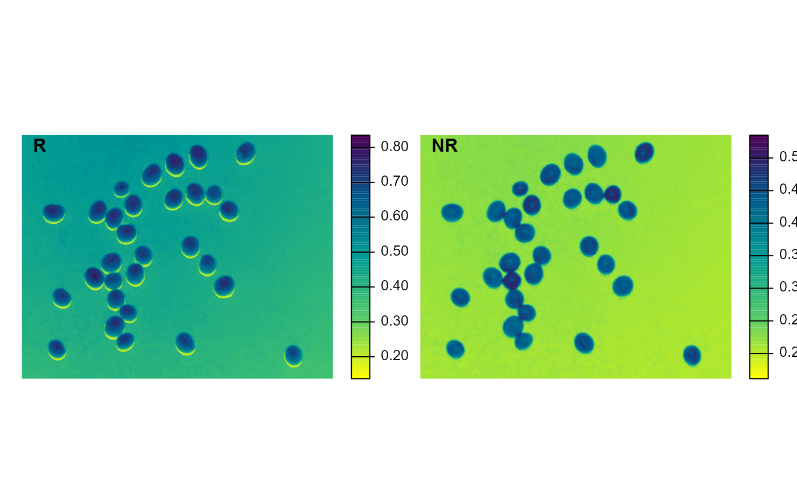
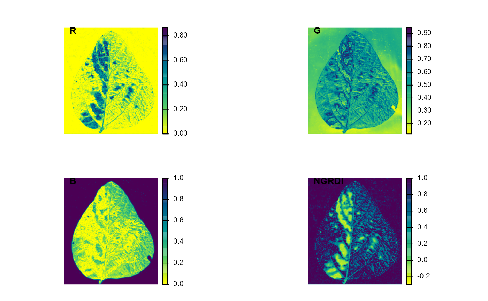

image_index() Builds image indexes using Red, Green, Blue, Red-Edge, and NIR bands.
plot.image_index() produces a raster (type = "raster", default) or a
density (type = "density") plot of the index values computed with
image_index().
image_index( image, index = NULL, my_index = NULL, resize = FALSE, re = NULL, nir = NULL, show_image = TRUE, nrow = NULL, ncol = NULL, parallel = FALSE, workers = NULL, verbose = TRUE ) # S3 method for image_index plot(x, type = "raster", nrow = NULL, ncol = NULL, ...)
| image | An image object. |
|---|---|
| index | A character value (or a vector of characters) specifying the
target mode for conversion to binary image. Use |
| my_index | User can calculate a different index using the bands names,
e.g. |
| resize | Resize the image before processing? Defaults to |
| re | Respective position of the red-edge band at the original image file. |
| nir | Respective position of the near-infrared band at the original image file. |
| show_image | Show image after processing? |
| nrow, ncol | The number of rows or columns in the plot grid. Defaults to
|
| parallel | Processes the images asynchronously (in parallel) in separate
R sessions running in the background on the same machine. It may speed up
the processing time when |
| workers | A positive numeric scalar or a function specifying the maximum number of parallel processes that can be active at the same time. |
| verbose | If |
| x | An object of class |
| type | The type of plot. Use |
| ... | Currently not used |
A list containing Grayscale images. The length will depend on the number of indexes used.
A trellis object containing the distribution of the pixels for each
index.
The following indexes are available in pliman.
R red
G green
B blue
NR normalized red R/(R+G+B).
NG normalized green G/(R+G+B)
NB normalized blue B/(R+G+B)
GB green blue ratio G/B
RB red blue ratio R/B
GR green red ratio G/R
BI brightness Index sqrt((R^2+G^2+B^2)/3)
BIM brightness Index 2 sqrt((R*2+G*2+B*2)/3)
SCI Soil Colour Index (R-G)/(R+G)
GLI Green leaf index Vis Louhaichi et al. (2001) (2*G-R-B)/(2*G+R+B)
HI Primary colours Hue Index (2*R-G-B)/(G-B)
NDGRI Normalized green red difference index (Tucker, 1979) (G-R)/(G+R)
NDGBI Normalized green blue difference index (G-B)/(G+B)
NDRBI Normalized red blue difference index (R-B)/(R+B)
I R+G+B
S ((R+G+B)-3*B)/(R+G+B)
L R+G+B/3
VARI A Visible Atmospherically Resistant Index (G-R)/(G+R-B)
HUE Overall Hue Index atan(2*(B-G-R)/30.5*(G-R))
HUE2 atan(2*(R-G-R)/30.5*(G-B))
BGI B/G
GRAY 0.299*R + 0.587*G + 0.114*B
GLAI (25*(G-R)/(G+R-B)+1.25)
CI Coloration Index (R-B)/R
SAT Overhall Saturation Index (max(R,G,B) - min(R,G,B)) / max(R,G,B)
SHP Shape Index 2*(R-G-B)/(G-B)
RI Redness Index R**2/(B*G**3)
Nobuyuki Otsu, "A threshold selection method from gray-level histograms". IEEE Trans. Sys., Man., Cyber. 9 (1): 62-66. 1979. doi: 10.1109/TSMC.1979.4310076
Tiago Olivoto tiagoolivoto@gmail.com
Tiago Olivoto tiagoolivoto@gmail.com
library(pliman) img <- image_pliman("sev_leaf.jpg") # resize the image to 30% of the original size ind <- image_index(img, resize = 30, show_image = FALSE) plot(ind)#> Warning: device support for raster images unknown, ignoring 'raster=TRUE'